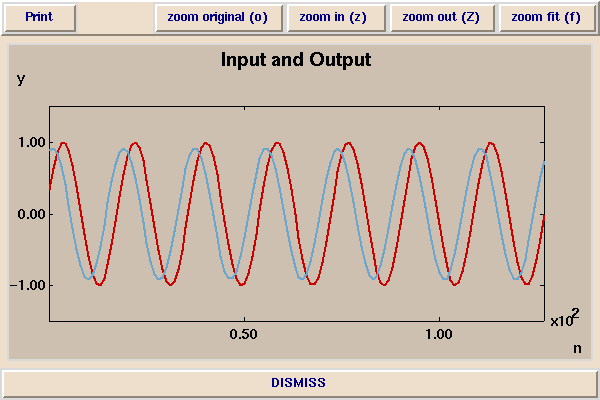
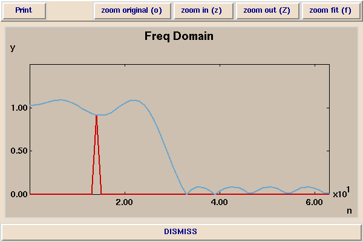

In this demonstration, a more elaborate linear shift-invariant system is studied. In this system, the output y(n) (shown in blue below) is a linear combination of the previous 32 inputs x(n), x(n-1), ... x(n-31). Notice that even with this more elaborate system, a sinusoidal input still yields a sinusoidal output.

In the above plot, the input sinusoid is at 440 Hz, and the output sinusoid is only slightly attenuated. The sample rate is again 8kHz. In this demonstration, if we vary the frequency of the input sine wave above about 800 Hz, the amplitude of the output drops off markedly. The amplitude response is shown below in blue, with the red spike again indicating the frequency of the input (440 Hz).

The frequency scale is unfortunately not correctly labeled. It ranges from 0 to 64, which corresponds to frequencies from 0 to 2 kHz. This filter is called a low-pass filter. Frequencies below about 800 Hz (approximately 25 on the horizontal scale) pass through the system with only slight attenuation or slight gain. The gain is near unity in this "passband". Frequencies above 800 Hz are attenuated to less than about 0.1 of their original amplitude.
As explained above, each output sample y(n) is a weighted linear combination of 32 input samples. The choice of weights determines the frequency response of the system, and is a topic of EE123.